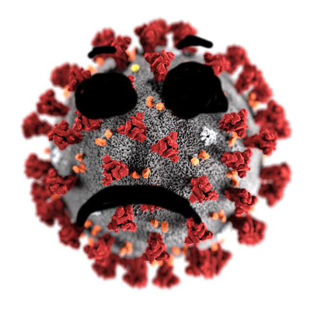

It appears the connection was lost
This can happen when you have been inactive for too long, or the server goes to sleep.
If it is happening while you are active, please let me know: nodeautonotifier@gmail.com
Click
HERE
to return